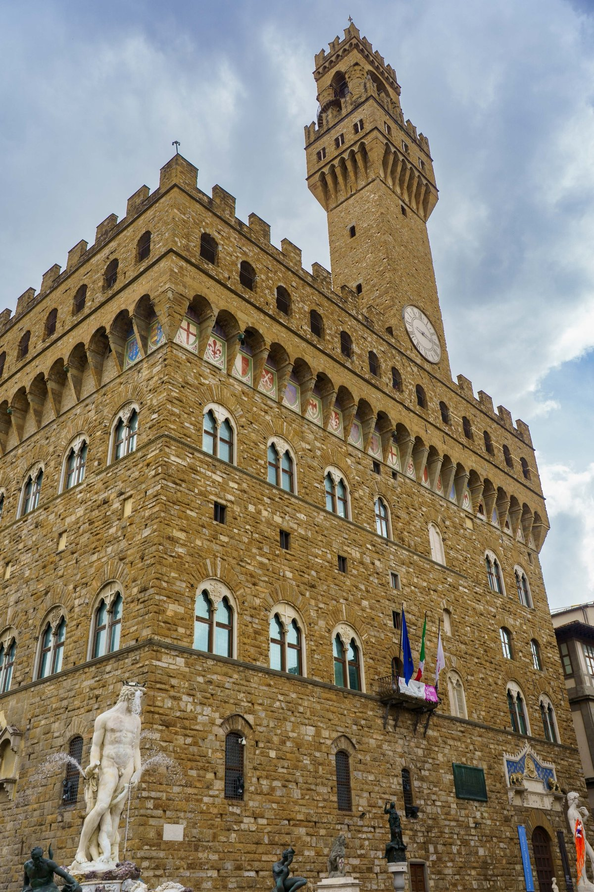
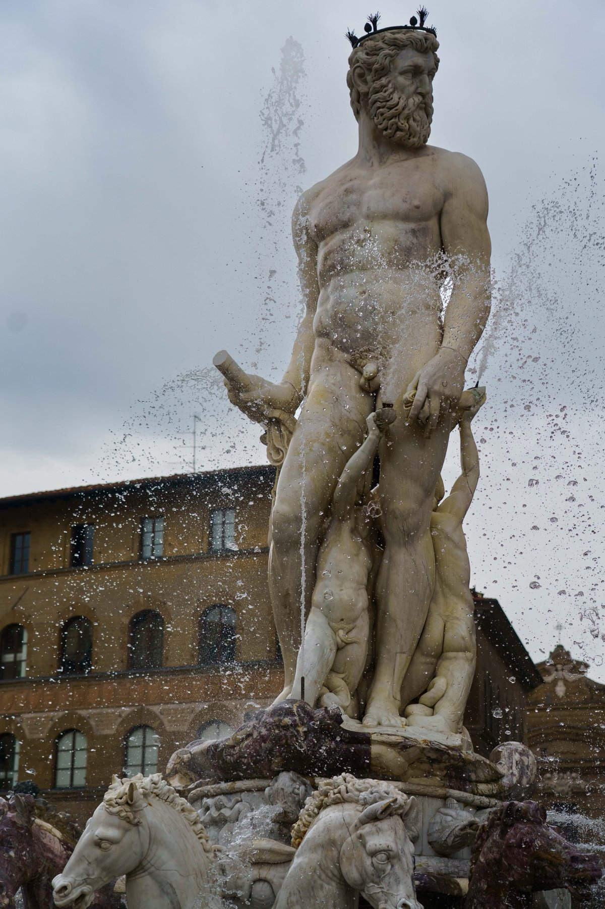
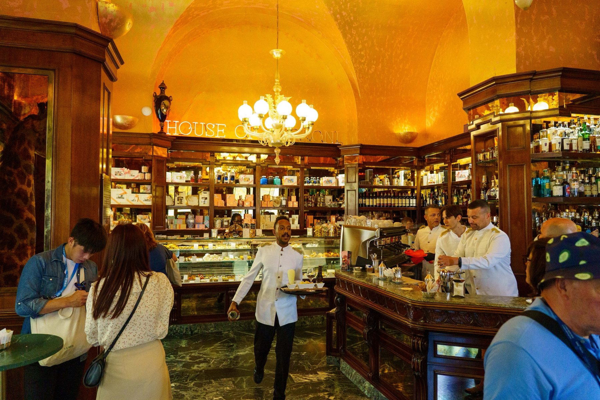
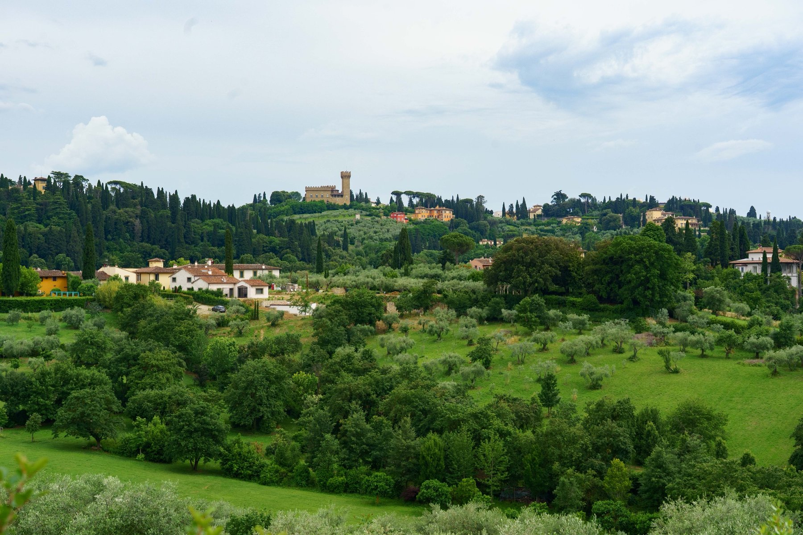
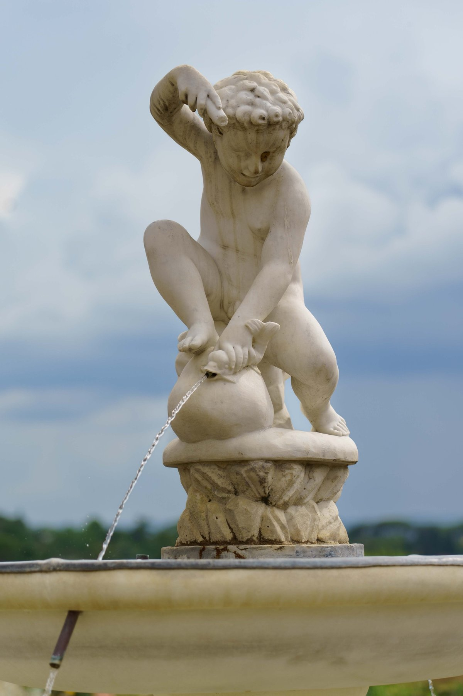
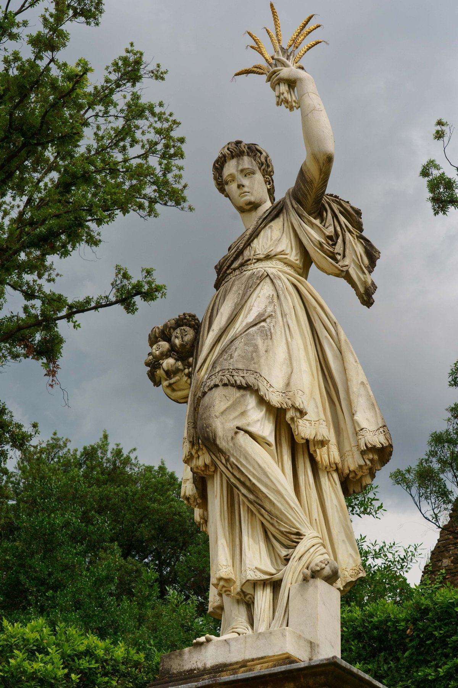
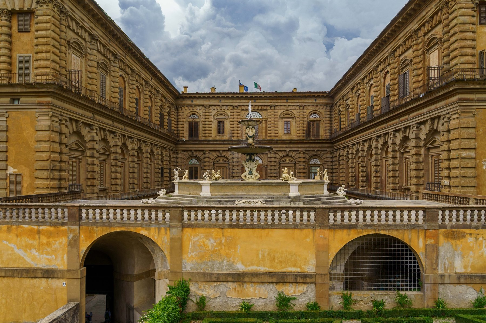
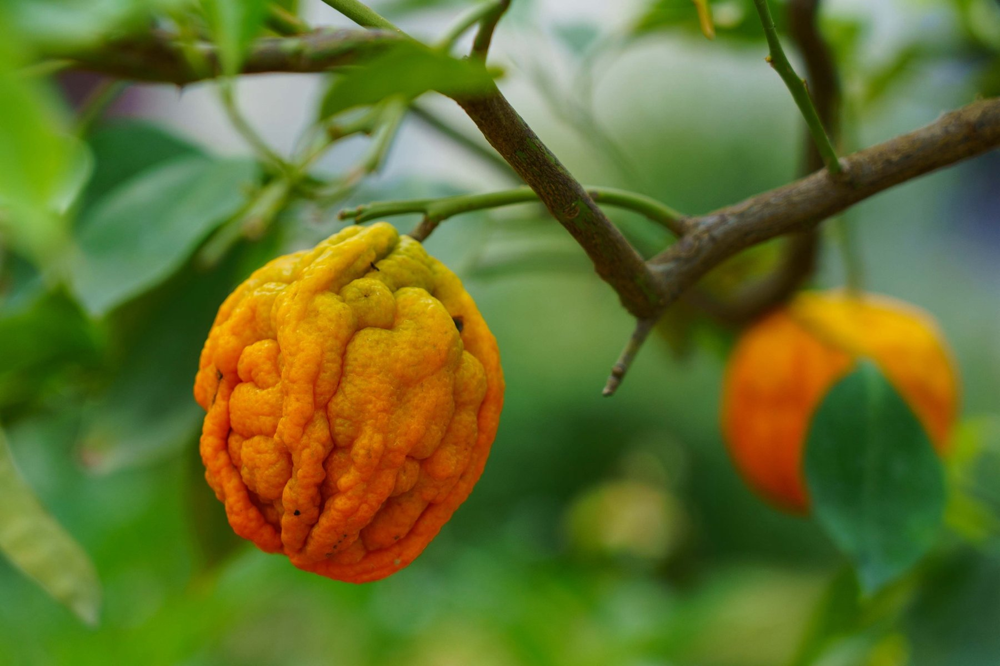
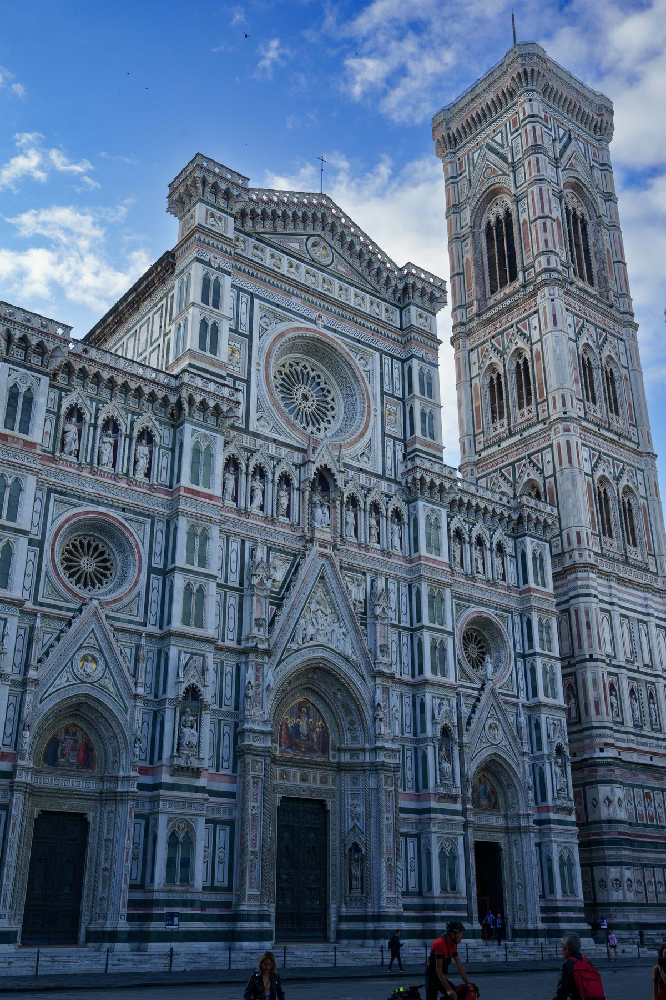
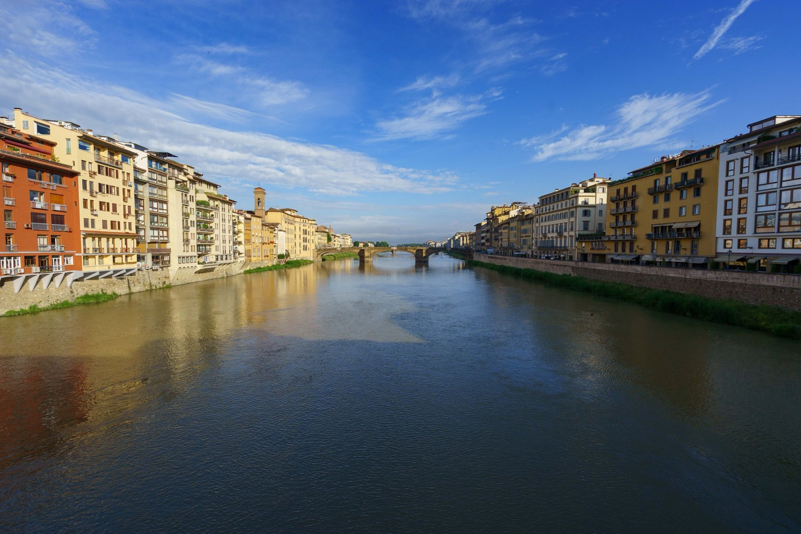

Florence
Florence opens on Piazza della Signoria, where Palazzo Vecchio's fortress tower rises above the Fountain of Neptune, the sea god flanked by his usual retinue of tritons and sea-horses. A few steps away, Rivoire keeps its marble counter and gilded interior much as they've looked since it became official chocolatier to the House of Savoy. Behind the Pitti Palace, the Giardino di Boboli rewards a slow walk: a cherub fountain pours from a fish, a statue of Abundance lifts gilded wheat sheaves overhead, the Fountain of the Artichoke fills the palace's own courtyard, and a knobby citrus fruit hangs heavy from a garden tree, with the Tuscan countryside rolling out toward the hills beyond the walls. Back in the city, the Duomo's marble facade and Giotto's Campanile still dominate the skyline as they have since the Renaissance, and the Arno slides past the color-block facades lining its banks, a bridge arching over the water in the distance.









